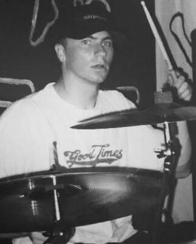

Scott Raynor (né le 23 mai 1978 à Poway, Californie, États-Unis) fut
un membre cofondateur du groupe californien de pop-punk Blink-182,
jusqu'à son remplacement par Travis Barker lors de la tournée qui
suivait le lancement de l'album Dude Ranch. Scott est également
passionné pour les batteurs de jazz.
Ses débuts
Dans son adolescence, il était un véritable fan du groupe Metallica.
Il devint batteur lorsqu'il créa son premier groupe de musique avec
quelques amis seulement parce qu'ils l'appelaient le "good
instruments" ce qui signifie "celui qui a le rythme dans la peau".
Tout d'abord passionné par le heavy-metal, il s'orienta
progressivement vers le punk, ce qui l'amena rapidement à rejoindre
Blink-182.
Le groupe Blink-182 (1992 à 1997)
En 1992, Scott Raynor et Tom Delonge fondèrent le groupe Blink qui
devint plus tard Blink-182. En 1996, alors que la popularité du groupe
était croissante, les parents de Scott décidèrent de déménager pour
Reno dans le Nevada. Le groupe perdit alors son batteur qui fut
remplacé un temps par Mike Krull. Ne parvenant pas à continuer sans
son batteur, le groupe fit pression sur les parents de Scott afin que
ce dernier vienne emménager dans la famille de Mark. Le groupe fut
donc à nouveau réuni quelques mois plus tard et continua sa
progression.
La séparation (1997)
Malheureusement, durant une tournée de l'été 1997, alors que le groupe
s'embarque dans une grande tournée, Scott se fait de plus en plus
absent et c'est dans la surprise générale des fans que Scott est
finalement exclu du groupe entre deux concerts de la tournée.
Source : Wikipedia